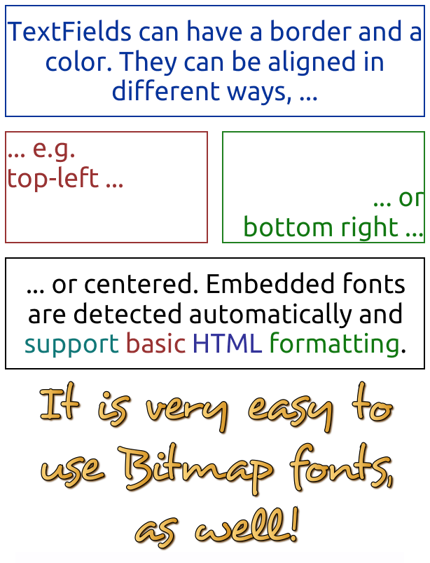
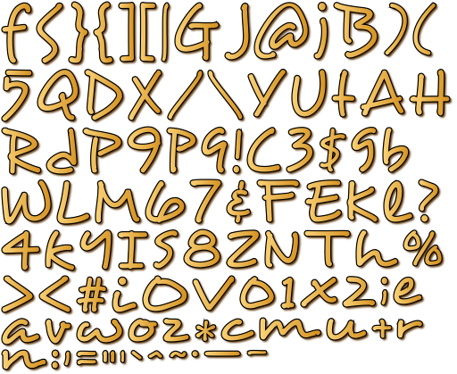

var textField:TextField = new TextField(100, 20, "text"); (1)
textField.format.setTo("Arial", 12, Color.RED); (2)
textField.format.horizontalAlign = Align.RIGHT; (3)
textField.border = true; (4)Dynamic Text
Text is an important part of every application. You can only convey so much information with images; some things simply need to be described with words, dynamically at run-time.
TextFields
Starling makes it easy to display dynamic text. The TextField class should be quite self explanatory!
| 1 | Create a TextField with a size of 100×20 points, displaying the text "text". |
| 2 | We set the format to "Arial" with a size of 12 points, in red. |
| 3 | The text is aligned to the right. |
| 4 | The border property is mainly useful during development: it will show the boundaries of the TextField. |
Note that the style of the text is set up via the format property, which points to a starling.text.TextFormat instance.
|
Once created, you can use a TextField just like you’d use an image or quad.

Figure 1. A few samples of Starling’s text rendering capabilities.
TrueType Fonts
Per default, Starling will use system fonts to render text. For example, if you set up your TextField to use "Arial", it will use the one installed on the system (if it is).
However, the rendering quality of that approach is not optimal; for example, the font might be rendered without anti-aliasing.
For a better output, you should embed your TrueType fonts as assets in your project.xml configuration file. Use the following code to do that:
<assets path="fonts/Arial.ttf"/> (1)
<assets path="fonts/Arial Bold.ttf"/>
<assets path="fonts/Arial Italic.ttf"/> (2)| 1 | Embedding the standard Arial font. |
| 2 | Bold and italic styles must be embedded separately. |
After embedding the font, any TextField that is set up with a corresponding font name (font family) and weight will use it automatically. There’s nothing else to set up or configure.
| Beware of the big footprint when embedding all glyphs of a font. |
If your text is clipped or does not appear at the correct position, have a look at your current stage.quality setting.
A low quality value may cause OpenFL to report incorrect values regarding the text bounds, and Starling depends on those values when it draws the text.
(I’m talking about the OpenFL stage here; and this applies only to TrueType fonts.)
|
Bitmap Fonts
Using TrueType fonts as shown above is adequate for text that does not change very often. However, if your TextField constantly changes its contents, or if you want to display a fancy font that’s not available in TrueType format, you should use a bitmap font instead.
A bitmap font is a texture containing all the characters you want to display. Similar to a TextureAtlas, an XML file stores the positions of the glyphs inside the texture.
This is all Starling needs to render bitmap fonts. To create the necessary files, there are several options:
-
Bitmap Font Generator, a tool provided by AngelCode that lets you create a bitmap font out of any TrueType font. It is, however, only available for Windows.
-
Glyph Designer for macOS, an excellent tool that allows you to add fancy special effects to your fonts.
-
bmGlyph, also exclusive for macOS, available on the App Store.
-
Littera, a full-featured free online bitmap font generator (Flash content emulated in Ruffle).
The tools are all similar to use, allowing you to pick one of your system fonts and optionally apply some special effects. On export, there are a few things to consider:
-
Starling requires the XML variant of the
.fntformat. -
Make sure to pick the right set of glyphs; otherwise, your font texture will grow extremely big.
The result is a .fnt file and an associated texture containing the characters.

Figure 2. A bitmap font that has color and drop shadow included.
To make such a font available to Starling, you can embed it in the SWF and register it at the TextField class.
// these bitmap assets should be defined in project.xml
// <assets path="assets/myfont.fnt"/>
// <assets path="assets/myfont.png"/>
var fontString:String = Assets.getText("assets/myfont.fnt");
var fontBmd:BitmapData = Assets.getBitmapData("assets/myfont.png");
var texture:Texture = Texture.fromBitmapData(fontBmd);
var xml:Xml = Xml.parse(fontString);
var font:BitmapFont = new BitmapFont(texture, xml); (1)
TextField.registerCompositor(font, font.name); (2)| 1 | Create an instance of the BitmapFont class. |
| 2 | Register the font at the TextField class. |
Once the bitmap font instance has been registered at the TextField class, you don’t need it any longer. Starling will simply pick up that font when it encounters a TextField that uses a font with that name. Like here:
var textField:TextField = new TextField(100, 20, "Hello World");
textField.format.font = "fontName"; (1)
textField.format.size = BitmapFont.NATIVE_SIZE; (2)| 1 | To use the font, simply reference it by its name. By default, that’s what is stored in the face attribute within the XML file. |
| 2 | Bitmap fonts look best when they are displayed in the exact size that was used to create the font texture. You could assign that size manually — but it’s smarter to let Starling do that, via the NATIVE_SIZE constant. |
Gotchas
There’s one more thing you need to know: if your bitmap font uses just a single color (like a normal TrueType font, without any color effects), your glyphs need to be exported in pure white.
The format.color property of the TextField can then be used to tint the font into an arbitrary color at runtime (simply by multiplication with the RGB channels of the texture).
On the other hand, if your font does contains colors (like the sample image above), it’s the TextField’s format.color property that needs to be set to white (Color.WHITE).
That way, the color tinting of the TextField will not affect the texture color.
|
For optimal performance, you can even add bitmap fonts to your texture atlas! That way, your texts may be batched together with regular images, reducing draw calls even more. To do that, simply add the font’s PNG image to your atlas, just like the other textures.
Then initialize the bitmap font with the SubTexture from the atlas and the regular When you support multiple scale factors (a concept we will look at in the Mobile Development chapter), the process becomes a little difficult, though. You cannot simply create one high resolution font and have the atlas generator scale it down; this would result in occasional graphical glitches. Each scaled font must be created separately by the bitmap font creator. |
The MINI Font
Starling actually comes with one very lightweight bitmap font included. It probably won’t win any beauty contests — but it’s perfect when you need to display text in a prototype, or maybe for some debug output.
Figure 3. The "MINI" bitmap font.
When I say lightweight, I mean it: each letter is only 5 pixels high. There is a trick, though, that will scale it up to exactly 200% its native size.
var textField:TextField = new TextField(100, 10, "The quick brown fox ...");
textField.format.font = BitmapFont.MINI; (1)
textField.format.size = BitmapFont.NATIVE_SIZE * 2; (2)| 1 | Use the MINI font. |
| 2 | Use exactly twice the native size. Since the font uses nearest neighbor scaling, it will stay crisp! |